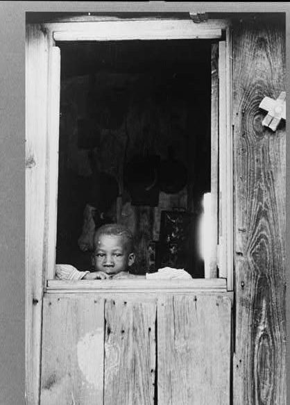

Editorial Design / Exhibition Identity
The FSA-OWI
Collection
American life / 1935–1944
Childhood, family, resilience, and everyday life. An exhibition of historical photography from the Farm Security Administration / Office of War Information collection, with a focus on Oklahoma and Puerto Rico.
Enter the exhibition
01 / Exhibition identity
A frame for
everyday stories.
Three original promotional compositions. Documentary imagery, quiet framing, and deliberate pacing.
03 / Interactive catalog
Explore the
Exhibition Catalog.
Turn the pages to explore the photographs and the original editorial design.
04 / Project details
Photography
comes first.
The FSA-OWI Collection is an exhibition and editorial design project exploring historical photography through the experiences of children and families. Inspired by archival film and documentary storytelling, I developed a visual system that allows the photographs to remain the focus while connecting each image through typography, composition, and thoughtful pacing.
- Category
- Editorial Design / Exhibition Identity
- Deliverables
- Exhibition Catalog
Promotional Graphics
Exhibition Postcards
Digital Flipbook